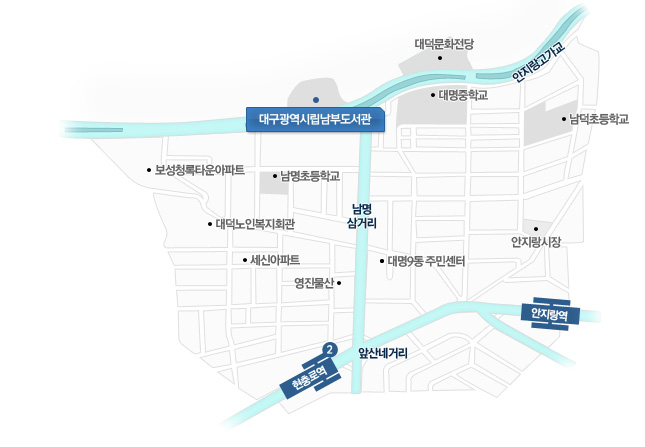

찾아오시는 길│来图书馆的路

| 버스│公交车 | 300, 410-1, 600, 750, 달서4, 달서4-1 |
|---|---|
| 지하철│地铁 | 1호선 현충로역 2번 출구 (显忠路站1号线2号出口) |
- 대구광역시 남구 앞산순환로 512(우편번호 42501) │ 大邱广域市南区前山循环路512(邮政编码42501)
- Tel 053)231-2300
- Fax 053)653-6097

| 버스│公交车 | 300, 410-1, 600, 750, 달서4, 달서4-1 |
|---|---|
| 지하철│地铁 | 1호선 현충로역 2번 출구 (显忠路站1号线2号出口) |